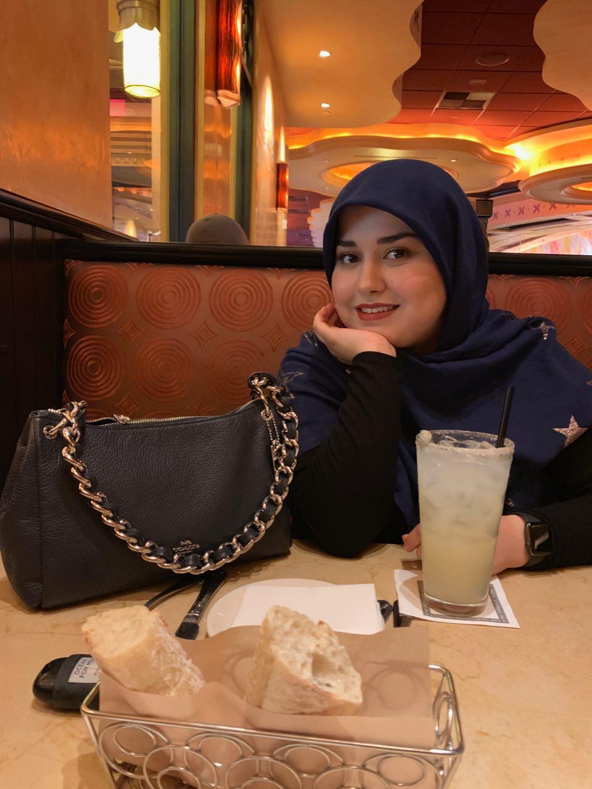

My name is Marjon Ardehali
I am a senior student in Syracuse University. My major is Information Management and Technology. I want to be a web developer.
In my free time I listen to musics or watch YouTube videos.
I love shopping and watching funny shows whenever I am nervuse about something.
I have part time job at Destiny USA mall. I am working with an amazing team.
In this website I am sharing everithing I am going through in my last year at Syracuse University. I start my first semester of senior year, by taking 18 credits. I have this feeling that if I did not put this much pressure on myself I would have enjoy senior year so much more.
Thank God, I have so many great professors who understand my situation and support me to go through everything smoothly.